Floor one Switch S6/S7 Stretch
Series&Breeze
Repair Manual
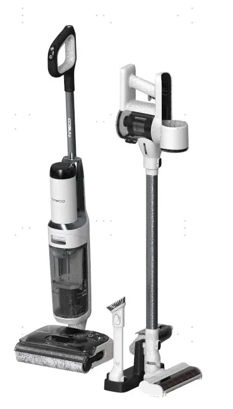
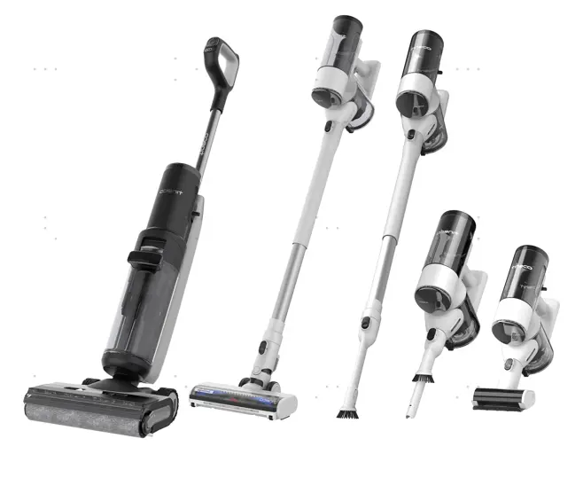
IBU Technical Support Team
History
| No | Date | Comments | Version | ISSUE | Approve |
|---|---|---|---|---|---|
| 1 | 25/03/27 | First Draft | 1.0 | ||
Tools
Electric screwdriver\Long-nose pliers\Slotted screwdriver\Zip tie\Scissors
Range of Product
| No | Product Name | Factory Serial Model | SKU |
|---|---|---|---|
| 1 | FLOOR ONE SWITCH S6 STRETCH | CL2348F-01 | FW310300DE |
| 2 | Floor One SWITCH S6 STRETCH | CL2348L-02 | FW311500SA |
| 3 | FLOOR ONE SWITCH S6 STRETCH | CL2348E-01 | FW310100US |
| 4 | FLOOR ONE SWITCH S6 STRETCH PLUS | CL2348F-04 | FW311000DE |
| 5 | FLOOR ONE SWITCH S7 STRETCH | CL2426E-01 | FW350300VN |
| 6 | FLOOR ONE SWITCH S7 STRETCH | CL2426F-01 | FW350500SG |
| 7 | FLOOR ONE SWITCH S7 STRETCH | CL2426D-01 | FW350100IL |
| 8 | Floor One Switch S7 Stretch | CL2426E-02 | FW351600CL |
| 9 | Floor One Switch S7 Stretch | CL2426K-01 | FW351500RU |
| 10 | Floor One Switch S7 Stretch | CL2426J-01 | FW351300TW |
| Floor One Switch S6 Stretch Breeze | CL2543B-01 | FW340500DE | |
| Floor One Switch i5 Stretch Breeze | CL2543A-01 | FW370300US | |
| Floor One Switch S6 Stretch Breeze | CL2543C-01 | FW340700US | |
| Floor One Switch i6 Power Kit | CL2543G-01 | FW371600ID | |
| Floor One Switch i5 Stretch | CL2543-01 | FW370100DE | |
Range of Spare Part
Please refer to the actual product specifications.
| No | Spare Part Name | Remark | Photo |
|---|---|---|---|
| 1 | HEPA & Cover Assembly | vacuum | 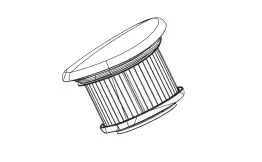  |
| 2 | Brush Roller | ||
| 3 | HEPA Assy | Floor washer |  |
| 4 | Filter Holder | vacuum | 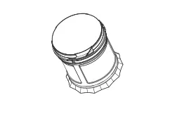 |
| 5 | Main Body | power source | 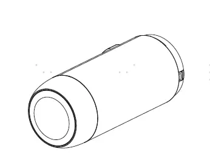 |
| 6 | Main Body | vacuum | 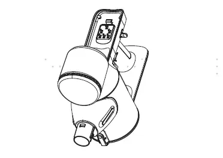 |
| 7 | Charging Base | vacuum holder base | 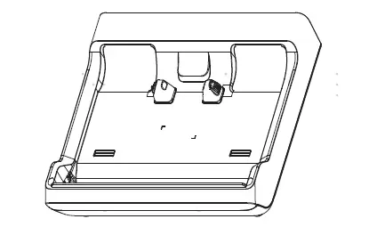 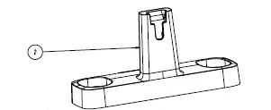 |
| 8 | Charging Base | drying dock | |
| 9 | Battery | ||
| 10 | Display Screen |  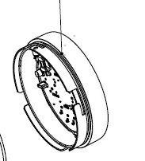 | |
| 11 | plastic part | main body charging wire assembly | |
| 12 | plastic part | water vlave |  |
| 13 | Wire | connection wire assembly in main body | 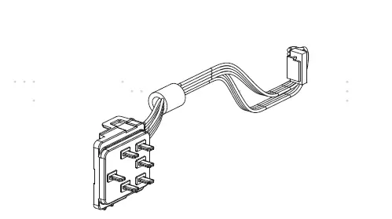 |
| 14 | Wire | connection wire assembly in power source | 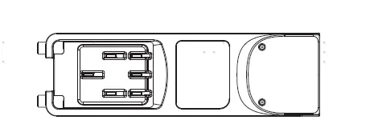 |
| 15 | Wire | power cord | 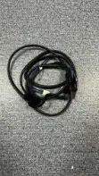 |
| 16 | Wire | DWT signal wire | 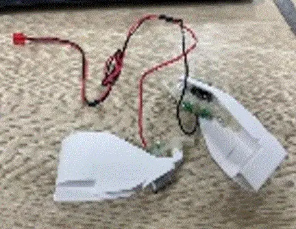 |
| 17 | Motor | main motor |  |
| 18 | Motor | brush motor |  |
| 19 | Motor | fan motor in drying dock | 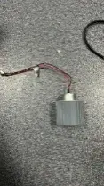 |
| 20 | Boiler | heating element in drying dock |  |
| 21 | PCBA | main PCBA | |
| 22 | PCBA | PCBA in drying dock | |
| 23 | Scraper |  | |
| 24 | Sensor | water level sensor |  |
| 25 | Sensor | dirt sensor |   |
| 26 | Pump | ||
| 27 | Handle |  | |
| 28 | Clean Water Tank | 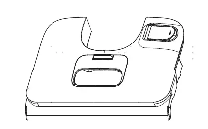  | |
| 29 | Dirt Water Tank | ||
| 30 | Mini Power Brush | 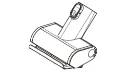 | |
| 31 | Tube Assembly |  | |
| 32 | wire | charging wire in drying dock |  |
| 33 | Pump | Electrolysis water component | 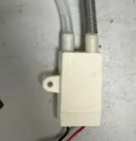 |
Tear down guide
Tear down brush part
Disassemble all accessories.
1.2 Unscrew the screw and remove the scraper
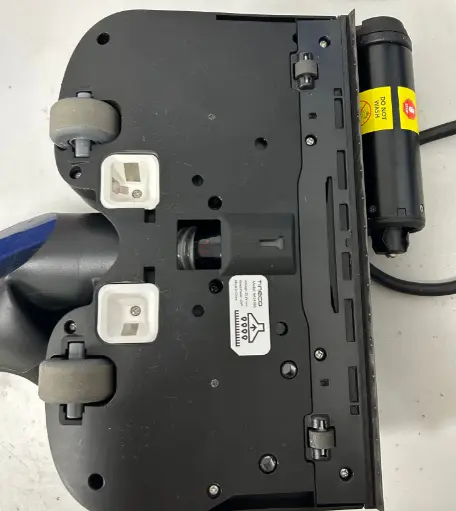
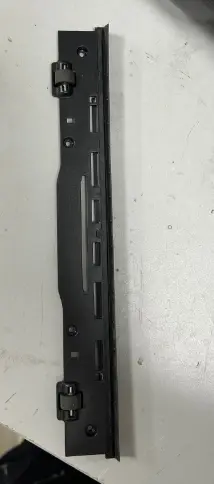
Unscrew the other screws, open the upper cover of the brush
Note: Electrolysis water component i is only available on the Switch S7 Stretch in select regions. Please refer to the actual product specifications.
Left: White, Switch S6 Stretch | Right: Black, Switch S7 Stretch
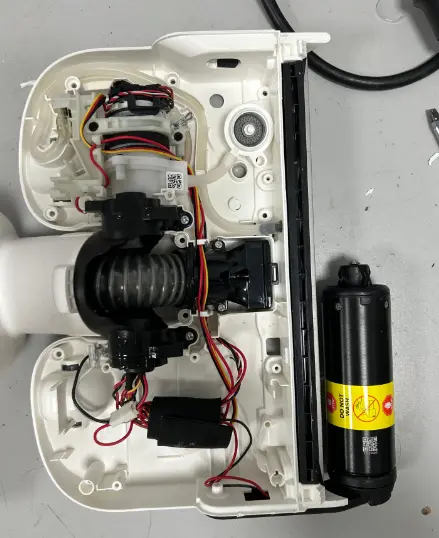
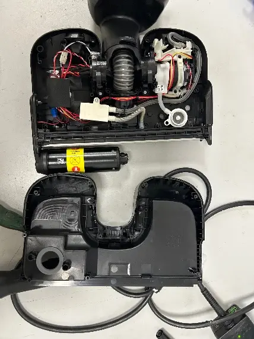
1.4 Remove the tape and unplug the terminals. Organize the wiring and water pipe inside. Unscrew the screws, disconnect the water pipe, and remove the electrolysis water component. （* Only in certain regions have this part. If not available, please refer to the next steps.）
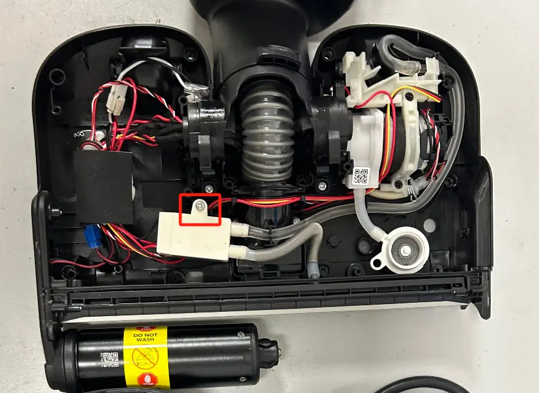

1.5 Remove the screws, water pump fixing bracket, disconnect the water pipe, and remove the water pump. Unscrew the screws and take out the drain valve connector and the liquid level sensor.
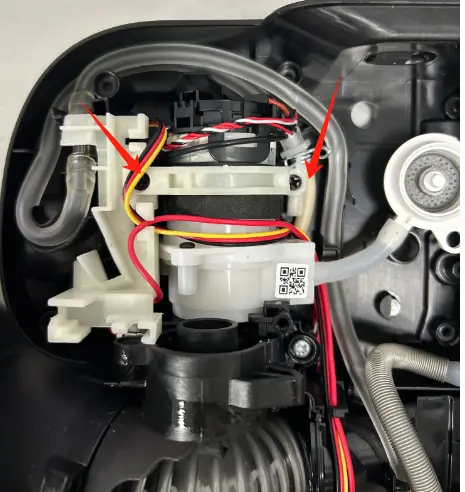
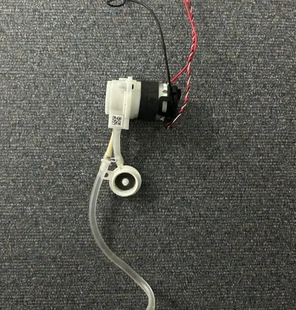
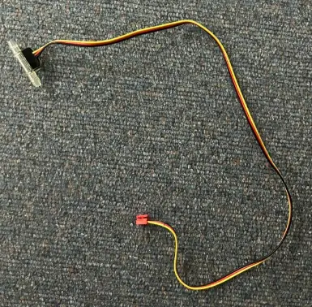
1.6 Organize the wiring harness and use a screwdriver to push out the brush charging component.
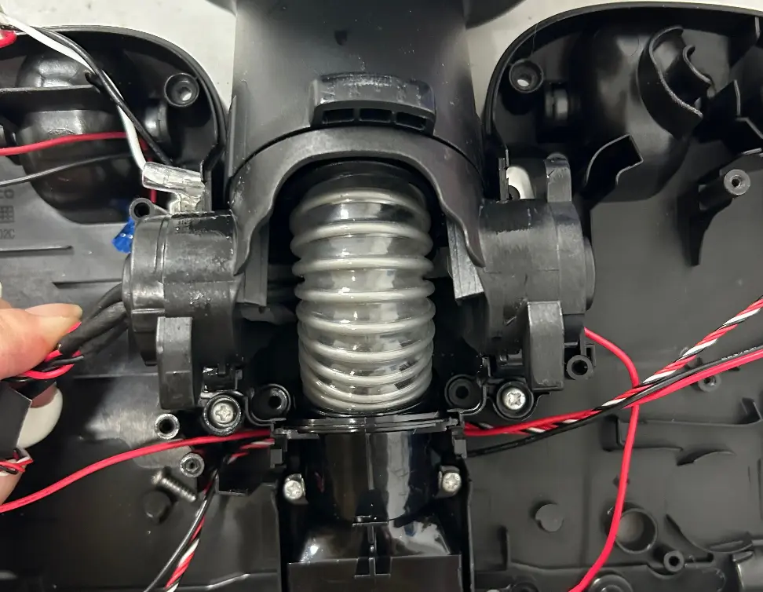
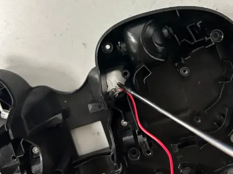
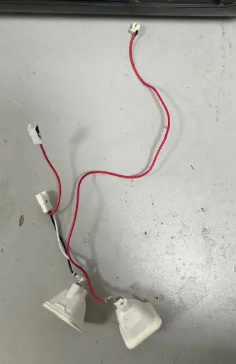
1.7 Remove the brush motor decorative cover. Unscrew the screws and remove the brush motor assembly.
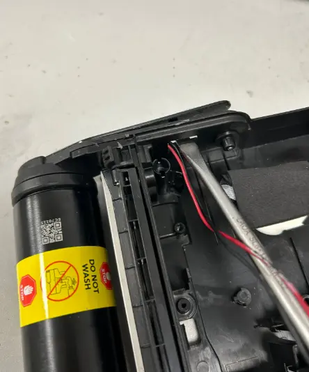
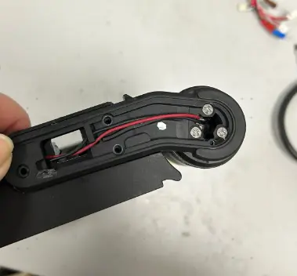

2. Tear down rotary union
2.1 Remove the fixing screws in brush part. Organize the wiring harness and separate the rotary union from the brush part.
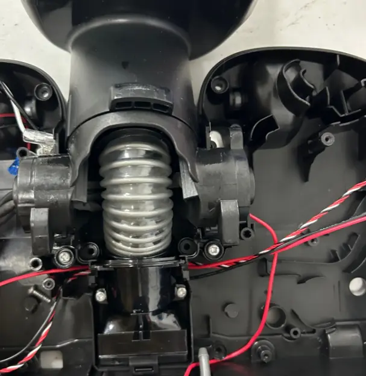
2.2 Use a screwdriver to pry open the screw plugs at the bottom of the machine, then unscrew the screws. Organize the wiring harness and water pipe.
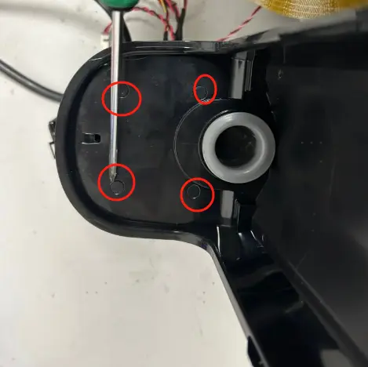
2.3 Pry open the latches to separate rotary union.
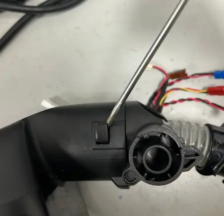
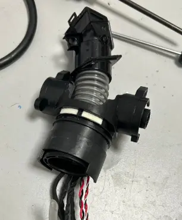
Tear down main body
3.1 Use a flathead screwdriver to pry up the decorative top cover of the machine (be careful not to damage the cover). Remove the screws in main body.
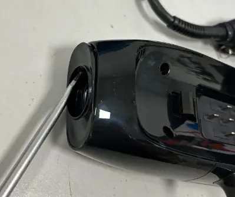
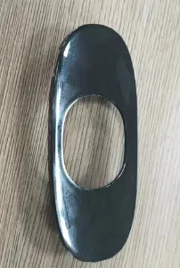
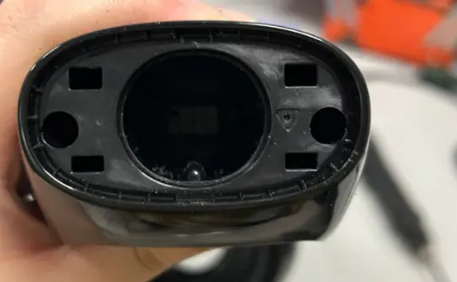
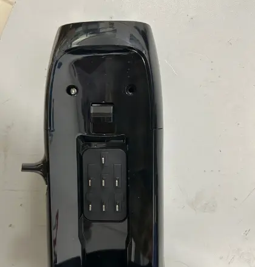
3.2 Remove the decorative cover from the body.
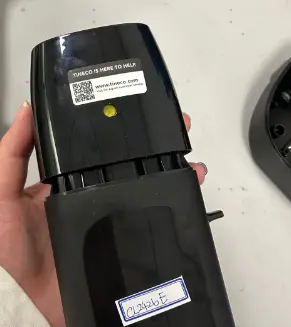
3.3 Use a screwdriver to pry open the screw plugs at the backside of the machine. Unscrew the remaining screws in main body.
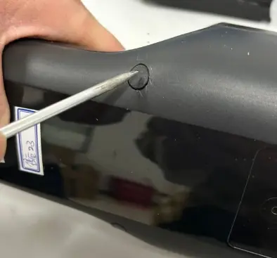
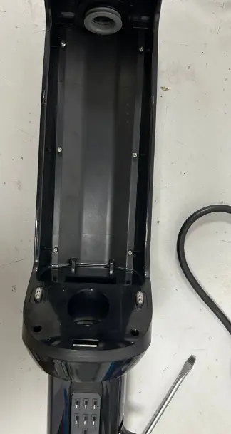
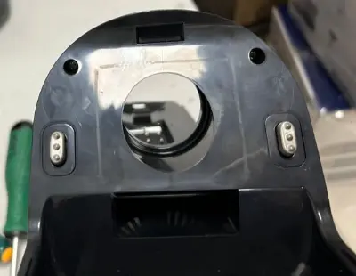
3.4 Pry open the upper decorative plastic case. Remove the remaining screws and remove the black plastic ring.
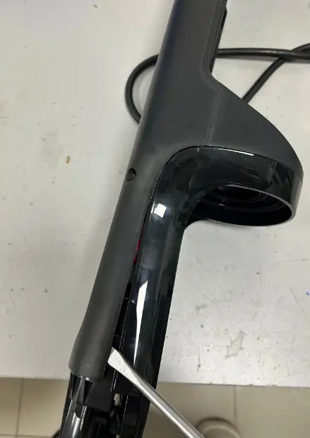
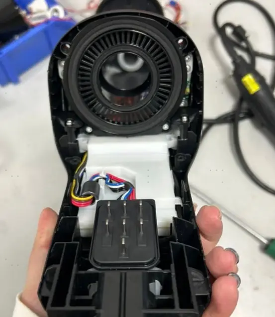
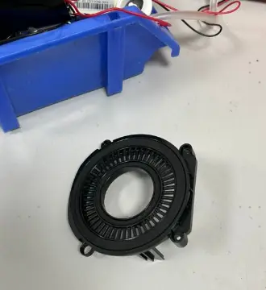
3.5 Use a screwdriver to pry open the bottom plastic case
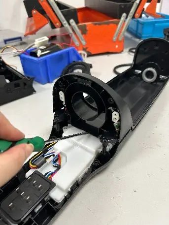
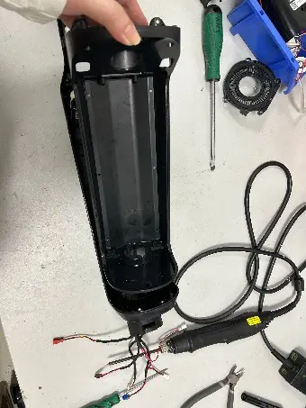
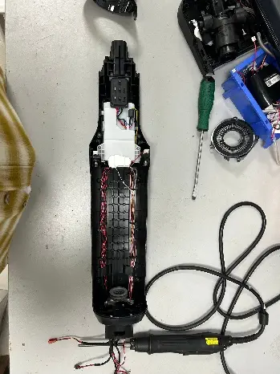
3.6 Use a flathead screwdriver to pry open the fastener, then remove the connection wire assembly.
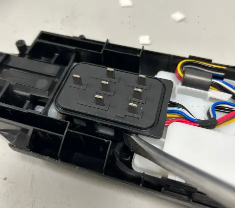
3.7 Use a flathead screwdriver to pry open the fastener, disconnect the terminal and detach the PCBA.
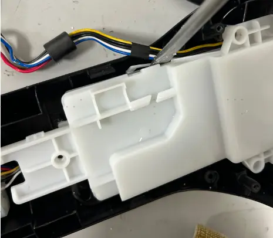
3.8 Remove the screws of the DWT signal wire assembly, then detach both the wire component and its bracket.
3.9 Remove the fixing screw of the dirt sensor assembly, then detach the sensor component.
Repair guide
| Failure System | Failure Phenomenon | No | Failure Mode | Repair Solution | Spare Parts |
|---|---|---|---|---|---|
| Water circulation system failure | No/less spray water | 1 | CWT failure | replace CWT | CWT |
| 2 | spray hole blocked | clean spray hole | maintenance | ||
| 3 | water valve blocked or damaged | remove blockage or replace water valve | water valve | ||
| 4 | pump failure | replace water pump | water pump | ||
| 5 | main pcba failure | replace main pcba | main pcba | ||
| 6 | pipe blocked | replace water pipe | water pipe | ||
| 7 | pipe bent or broken | fix or replace pipe | water pipe | ||
| 8 | Water Electrolysis Assembly failure | replace Water Electrolysis Assembly | Water Electrolysis Assembly | ||
| 9 | water level sensor blocked | replace water level sensor | water level sensor | ||
| leaking water | 10 | Debris channel /Air duct blocked | Clean blockage from debris channel，around the brush roller and suction hose;Dry and clean HEPA;Empty and clean the DWT | maintenance | |
| 11 | CWT damaged | replace CWT | CWT | ||
| 12 | DWT damaged | replace DWT | DWT | ||
| 13 | pump failure | replace pump | pump | ||
| 14 | water valve damaged | replace water valve | water valve | ||
| 15 | water pipe loose | Re-plug water pipe | water pipe | ||
| 16 | Sewage recovery pipe damaged | replace sewage recovery pipe | Rotary union | ||
| 17 | water pipe damaged | replace water pipe | water pipe | ||
| 18 | water level sensor broken | replace water level sensor | water level sensor | ||
| no suck up water | 19 | Debris channel /Air duct blocked | Clean blockage from debris channel，around the brush roller and suction hose;Dry and clean HEPA;Empty and clean the DWT | maintenance | |
| 20 | HEPA not installed properly | reinstall HEPA properly | maintenance | ||
| 21 | brush roller & HEPA worn or damaged | replace brush roller&HEPA | brush roller&HEPA | ||
| 22 | scraper worn or damaged | replace scraper | scraper | ||
| 23 | Sewage recovery pipe damaged | replace sewage recovery pipe | Rotary union | ||
| 24 | motor failure | replace main motor | main motor | ||
| 25 | brush motor failure | replace brush roller motor | brush roller motor | ||
| 26 | main pcba failure | replace main PCBA | main PCBA | ||
| charging system failure | No response when charging | 27 | power cord failure | replace power cord | power cord |
| 28 | charging pins in drying dock damaged | replace wire in drying dock | wire in drying dock | ||
| 29 | main body wire damaged | replace wire in main unit | wire in main unit | ||
| 30 | battery pack failure | replace battery pack | battery pack | ||
| 31 | PCBA in drying dock failure | replace PCBA in drying dock | PCBA in drying dock | ||
| 32 | wire assembly in main body failure | replace wire assembly in main body | wire assembly in main body | ||
| 33 | wire assembly in power source failure | replace wire assembly in power source | wire assembly in power source | ||
| 34 | Main PCBA failure | replace main PCBA | main PCBA | ||
| 35 | display screen failure | replace display screen | display screen | ||
| Battery level indicator flashes several times and then goes off, then the machine stop charging; battery level under 100% and the indicator unable To Increase;battery level drop when in charging | 36 | battery pack failure | replace battery pack | battery pack | |
| 37 | PCBA in drying dock failure | replace PCBA in drying dock | PCBA in drying dock | ||
| 38 | Main PCBA failure | replace main PCBA | main PCBA | ||
| Poor charging contact | 39 | charging pins in drying dock damaged | replace wire in drying dock | wire in drying dock | |
| 40 | main body wire damaged | replace wire in main unit | wire in main unit | ||
| 41 | wire assembly in main body failure | replace wire assembly in main body | wire assembly in main body | ||
| 42 | wire assembly in power source failure | replace wire assembly in power source | wire assembly in power source | ||
| 43 | power cord failure | replace power cord | power cord | ||
| abnormal noise during charging | 44 | Fan Assembly in drying dock failure | replace Fan Assembly | Fan Assembly | |
| 45 | PCBA in drying dock failure | replace PCBA in drying dock | PCBA in drying dock | ||
| 46 | Main PCBA Failure | Replace Main PCBA | Main PCBA | ||
| 47 | Battery Pack Failure | Replace battery pack | Battery Pack | ||
| Burnt smell during charging | 48 | Main PCBA failure | replace main PCBA | main PCBA | |
| 49 | drying dock failure | replace drying dock | drying dock | ||
| 50 | battery pack failure | replace battery pack | battery pack | ||
| Turn on failure | turn on but no reaction , screen not light up | 51 | handle failure | replace handle | handle |
| 52 | battery pack failure | replace battery pack | battery pack | ||
| 53 | wire assembly in main body failure | replace wire assembly in main body | wire assembly in main body | ||
| 54 | wire assembly in power source failure | replace wire assembly in power source | wire assembly in power source | ||
| 55 | Main PCBA failure | replace main PCBA | main PCBA | ||
| After pressing the power button, the display lights up, but it doesn't work after reclining the unit | 56 | Main PCBA failure | replace main PCBA | main PCBA | |
| stop running after several seconds | 57 | motor failure | replace motor | motor | |
| 58 | battery pack failure | replace battery pack | battery pack | ||
| 59 | wire assembly in main body failure | replace wire assembly in main body | wire assembly in main body | ||
| 60 | wire assembly in power source failure | replace wire assembly in power source | wire assembly in power source | ||
| 61 | Main PCBA failure | replace main PCBA | main PCBA | ||
| mode switch failure | switch mode but no reaction | 62 | handle failure | replace handle | handle |
| 63 | Main PCBA failure | replace main PCBA | main PCBA | ||
| switch mode but auto power-off | 64 | Main PCBA failure | replace main PCBA | main PCBA | |
| 65 | battery pack failure | replace battery pack | battery pack | ||
| 66 | motor failure | replace motor | motor | ||
| False alarm | DWT water is full but no alarm/Water is not full but still alarm | 67 | DWT full | Empty/clean the DWT | maintenance |
| 68 | DWT failure | replace DWT | DWT | ||
| 69 | DWT Signal Wire Failure | Replace DWT Signal wire | DWT Signal Wire | ||
| 70 | Main PCBA failure | replace main PCBA | main PCBA | ||
| CWT have enough water but still alarm | 71 | CWT failure | replace CWT | CWT | |
| 72 | spray hole blocked | clean spray hole | maintenance | ||
| 73 | water valve blocked or damaged | remove blockage or replace water valve | water valve | ||
| 74 | pump failure | replace pump | pump | ||
| 75 | pipe blocked | replace water pipe | water pipe | ||
| 76 | pipe bent or broken | fix or replace pipe | water pipe | ||
| 77 | water level sensor blocked or damaged | replace water level sensor | water level sensor | ||
| 78 | main PCBA failure | replace main pcba | main pcba | ||
| CWT have no water but not alarm | 79 | The Water level sensor has water remain inside | It tested okay after being turned up to the max mode for 30s | NFF | |
| 80 | water level sensor failure | replace water level sensor | water level sensor | ||
| 81 | Water pipe in front of the water level sensor blocked | replace water pipe | water pipe | ||
| 82 | main PCBA failure | replace main PCBA | main PCBA | ||
| Brush roller indicator blinking | 83 | Brush roller blocked or heavily worn | replace Brush roller | Brush roller | |
| 84 | brush roller motor failure | replace brush roller motor | brush roller motor | ||
| 85 | Main PCBA failure | replace main PCBA | main PCBA | ||
| iloop ring always red when suck nothing dirty;iloop ring always blue even suck dirty water (or other colored liquid) | 86 | Debris channel /Air duct blocked | Clean blockage from debris channel，around the brush roller and suction hose;Dry and clean HEPA;Empty and clean the DWT | maintenance | |
| 87 | dirty sensor failure | replace dirty sensor | dirty sensor | ||
| 88 | Main PCBA failure | replace main PCBA | main PCBA | ||
| 89 | display screen failure | replace display screen | display screen | ||
| screen display malfunction | screen not reaction/display incomplete/display blinking | 90 | display screen failure | replace display screen | display screen |
| 91 | Main PCBA failure | replace main PCBA | main PCBA | ||
| connect to network failure | WiFi/Mute/Language Switch Button no reaction | 92 | handle failure | replace handle | handle |
| 93 | Main PCBA failure | replace main PCBA | main PCBA | ||
| abnormal noise | main motor noise | 94 | main motor failure | replace main motor | main motor |
| noise from brush part | 95 | Brush roller blocked, worn or damaged | Clean blockage from debris channel，around the brush roller and suction hose, or replace brush roller | brush roller | |
| 96 | scraper dirty, worn or damaged | replace scraper | scraper | ||
| 97 | The small wheel noisy | replace the small repair wheel | small repair wheel | ||
| 98 | brush motor failure | replace brush motor | brush motor | ||
| 99 | pump noise | replace pump | pump | ||
| Self-cleaning malfunction | press the self-cleaning button,Voice Prompt“Please place appliance on charging dock",and the self-cleaning function not start; | 100 | power cord failure | replace power cord | power cord |
| stop running in self-cleaning process, and the screen turned off | 101 | charging pins in drying dock damaged | replace wire in drying dock | wire in drying dock | |
| 102 | main body wire damaged | replace wire in main unit | wire in main unit | ||
| 103 | battery pack failure | replace battery pack | battery pack | ||
| 104 | PCBA in drying dock failure | replace PCBA in drying dock | PCBA in drying dock | ||
| 105 | wire assembly in main body failure | replace wire assembly in main body | wire assembly in main body | ||
| 106 | wire assembly in power source failure | replace wire assembly in power source | wire assembly in power source | ||
| 107 | Main PCBA failure | replace main PCBA | main PCBA | ||
| press the self-cleaning button but no reaction | 108 | handle failure | replace handle | handle | |
| 109 | Battery failure | replace battery | battery | ||
| 110 | Main PCBA failure | replace main PCBA | main PCBA | ||
| self-cleaning cannot stop | 111 | Main PCBA failure | replace main PCBA | main PCBA | |
| There is a lot of water on the charging dock after the self-cleaning. | 112 | Debris channel /Air duct blocked | Clean blockage from debris channel，around the brush roller and suction hose;Dry and clean HEPA;Empty and clean the DWT | maintenance | |
| 113 | HEPA not installed properly | reinstall HEPA properly | maintenance | ||
| 114 | brush roller & HEPA worn or damaged | replace brush roller&HEPA | brush roller&HEPA | ||
| 115 | scraper worn or damaged | replace scraper | scraper | ||
| 116 | Sewage recovery pipe damaged | replace sewage recovery pipe | Rotary union | ||
| 117 | motor failure | replace main motor | main motor | ||
| 118 | brush motor failure | replace brush roller motor | brush roller motor | ||
| 119 | main pcba failure | replace main PCBA | main PCBA | ||
| after finish self-cleaning program still remind “Please begin self-cleaning cycle” | 120 | debris channel or hose is still dirty | clean debris channel and brush roller | maintenance | |
| 121 | Main PCBA failure | replace main PCBA | main PCBA | ||
| Brush roller not dry after drying process | 122 | Brush roller very dirty | clean or replace brush roller | brush roller | |
| 123 | Heating element in drying dock faliure | replace Heating element in drying dock | Heating element in drying dock | ||
| 124 | PCBA in drying dock failure | replace PCBA in drying dock | PCBA in drying dock | ||
| Brush roller not spinning | Brush roller stop spinning, and the machine alarm brush abnormal | 125 | brush roller is blocked or heavy wear | clean or replace brush roller | brush roller |
| 126 | brush roller motor failure | replace brush roller motor | brush roller motor | ||
| 127 | Main PCBA failure | replace main PCBA | main PCBA | ||
| Brush roller not spinning with no alarm | 128 | brush roller motor failure | replace brush roller motor | brush roller motor | |
| 129 | Main PCBA failure | replace main PCBA | main PCBA | ||
| lay flat issue | Cannot detect when unit is laid flat; Suction power remains unchanged | 130 | Main PCBA failure | replace main PCBA | main PCBA |